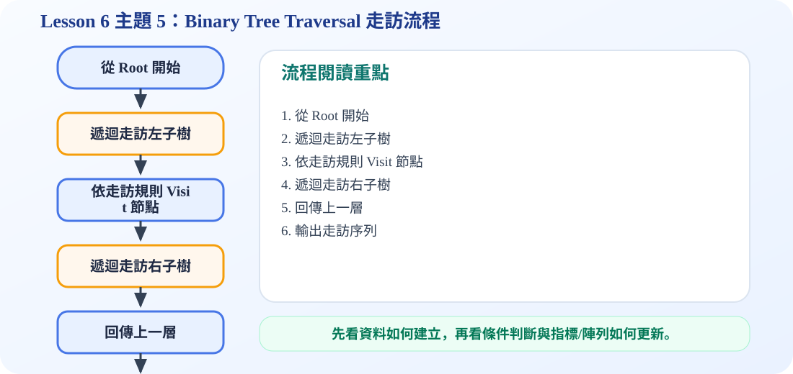

一、什麼是 Binary Tree Traversal？
核心概念
二元樹不是一條直線，所以要列印所有節點時，必須決定先拜訪左邊、目前節點，還是右邊。Traversal 就是規定一套順序，讓每個節點都被拜訪一次。
記憶方式：三種走訪都處理 Left、Visit、Right，只是 Visit root 的位置不同。
二、三種走訪規則：LVR、VLR、LRV
Inorder：L V R
先走左子樹，再拜訪目前節點，最後走右子樹。若是 BST，inorder 會得到由小到大的排序結果。
Preorder：V L R
先拜訪目前節點，再走左子樹與右子樹。常用於複製樹或儲存樹的結構。
Postorder：L R V
先走左子樹，再走右子樹，最後拜訪目前節點。常用於刪除樹，因為要先處理孩子再處理父節點。
觀念重點
不是只看單一節點，而是對每一棵子樹都套用同一個規則，因此 traversal 很適合用遞迴寫。
三、互動動畫：看同一棵樹的三種走訪順序
四、流程圖：遞迴走訪怎麼運作？
五、C 程式碼：建立二元樹並印出三種走訪
binary_tree_traversal.c
包含 Node 結構、createNode、inorder、preorder、postorder 與 main 測試。
/*
中文註解版程式：binary_tree_traversal.c
說明：主題 5：Binary Tree Traversal 示範。比較 inorder、preorder、postorder 三種走訪順序。
閱讀方式：先看資料結構定義，再看操作函式，最後看 main() 如何測試。
*/
// 匯入標準輸入輸出函式庫，提供 printf / scanf 等功能。
#include <stdio.h>
// 匯入標準函式庫，提供 malloc / free / exit 等記憶體與程式控制功能。
#include <stdlib.h>
// 定義節點結構：資料欄位存節點內容，指標欄位負責連到其他節點。
typedef struct Node {
char data;
struct Node *left;
struct Node *right;
} Node;
// 建立新節點：配置記憶體、填入資料，並把左右指標初始化為 NULL。
Node* createNode(char data) {
Node* n = (Node*)malloc(sizeof(Node));
n->data = data;
n->left = NULL;
n->right = NULL;
return n;
}
// Inorder 走訪：Left → Visit → Right；套用在 BST 會得到由小到大的排序。
void inorder(Node* root) {
if (root == NULL) return; // 遞迴終止條件：空節點不需要處理
inorder(root->left); // L
printf("%c ", root->data); // V
inorder(root->right); // R
}
// Preorder 走訪：Visit → Left → Right，常用來觀察樹建立的形狀。
void preorder(Node* root) {
if (root == NULL) return; // 遞迴終止條件：空節點不需要處理
printf("%c ", root->data); // V
preorder(root->left); // L
preorder(root->right); // R
}
// Postorder 走訪：Left → Right → Visit，常用於釋放整棵樹。
void postorder(Node* root) {
if (root == NULL) return; // 遞迴終止條件：空節點不需要處理
postorder(root->left); // L
postorder(root->right); // R
printf("%c ", root->data); // V
}
// 主程式：建立測試資料，呼叫上方函式，觀察輸出結果。
int main(void) {
Node* root = createNode('A');
root->left = createNode('B');
root->right = createNode('C');
root->left->left = createNode('D');
root->left->right = createNode('E');
root->right->right = createNode('F');
printf("Inorder : "); inorder(root); printf("\n");
printf("Preorder : "); preorder(root); printf("\n");
printf("Postorder : "); postorder(root); printf("\n");
return 0;
}
六、考試重點
Preorder 的 root 一定最先出現；Postorder 的 root 一定最後出現；Inorder 對 BST 會輸出排序結果。
可編輯 C 程式範例：含中文註解與線上編輯器
這一段提供可直接修改的 C 程式碼。可以按「複製程式」貼到線上編輯器執行，也可以下載 .c 檔案。
程式題目教學內容：Binary Tree Traversal 三種走訪
一、程式題目講解
本題比較 inorder、preorder、postorder 三種二元樹走訪方法。學生需要理解 root、left subtree、right subtree 的拜訪順序不同，輸出結果就不同。
二、完整程式碼
完整可執行程式碼已保留在上方「可編輯 C 程式範例：含中文註解與線上編輯器」區塊中，檔名為 binary_tree_traversal.c。該程式碼已加入中文註解，學生可以直接複製到 OnlineGDB、Programiz 或 OneCompiler 執行。
三、程式執行結果
Inorder : D B E A C F
Preorder : A B D E C F
Postorder : D E B F C A Inorder 先左子樹再根再右子樹，所以得到 D B E A C F；Preorder 先根再左右子樹，所以 A 最先出現；Postorder 先左右子樹再根，所以 A 最後出現。
四、程式流程圖與流程圖說明
本頁下方已保留原本的程式流程圖。閱讀流程圖時，可以依序掌握「初始化資料或節點 → 執行主要函式或判斷 → 輸出結果」的過程。先建立固定二元樹，再分別呼叫 inorder、preorder、postorder。每個走訪函式都用遞迴處理左子樹與右子樹，只是 printf(root) 的位置不同。
五、重要函數與語法說明
inorder()：Left → Root → Right；preorder()：Root → Left → Right；postorder()：Left → Right → Root；遞迴 recursion：讓函式反覆處理子樹。
六、整體說明
本題重點是三種 traversal 的差異只在拜訪 root 的時機。考試時可先找 root 的位置判斷是哪一種走訪。
程式流程圖：Binary Tree Traversal 走訪流程
下圖是本主題對應的程式執行流程，適合搭配本頁 C 程式碼一起看。

流程講解
- 走訪程式通常是遞迴函式，停止條件是目前節點為 NULL。
- Preorder 是 root、left、right；Inorder 是 left、root、right；Postorder 是 left、right、root。
- 每次進入節點都依照指定規則決定何時輸出 data。
- 最後會產生一串線性順序，代表整棵樹的走訪結果。
這張流程圖把本頁程式的執行順序整理成一條清楚路徑。閱讀時先看輸入與資料如何建立，再看條件判斷、指標或陣列索引如何改變，最後用輸出結果確認程式邏輯是否正確。